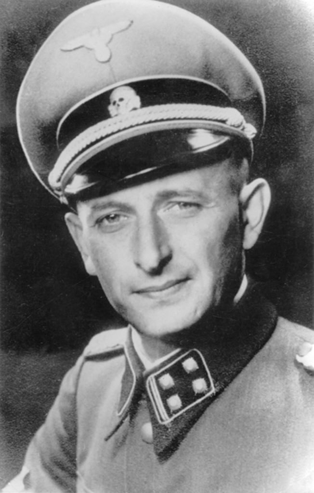
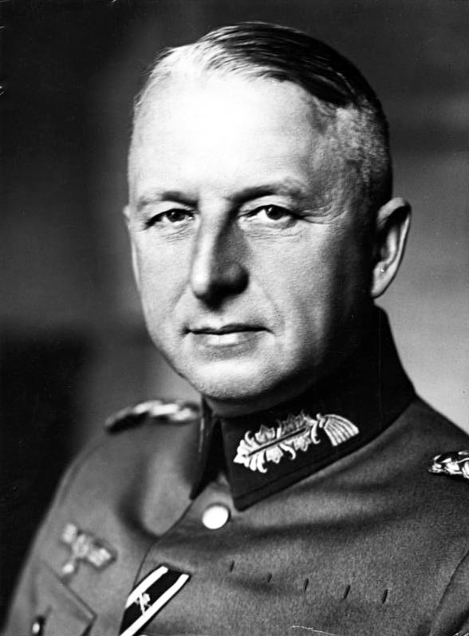
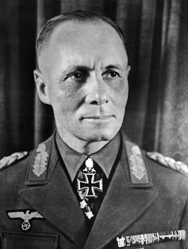
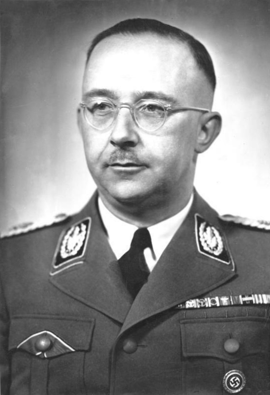
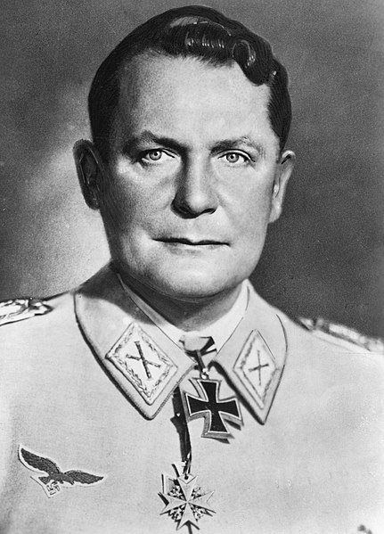

Adolf Hitler (1889-1945)
Adolf Hitler (1889-1945)
Kanclerz III Rzeszy , twórca i dyktator Rzeszy. |
| 
Adolf Eichamnn (1906-1962)
Główny koordynator i wykonawca planu ostatecznego rozwiązania kwestii żydowskiej. |
 Albert Speer (1905-1981)
Albert Speer (1905-1981)
Minister spraw uzbrojenia III Rzeszy , osobisty architekt Adolfa Hitlera. |
| 
Erich von Manstein (1887-1973)
Niemiecki feldmarszałek, twórca planu niemieckiej ofensywy na Francję. |
| 
Erwin Rommel (1891-1944)
Niemiecki feldmarszałek, dowódca Afrika Korps. |
| 
Heinrich Himmler (1900-1945)
Minister spraw wewnętrznych III Rzeszy , szef SS oraz gestapo. |
| 
Hermann Goring (1893-1946)
Minister lotnictwa III Rzeszy , dowódca Luftwaffe. |

Minister propagandy III Rzeszy. |